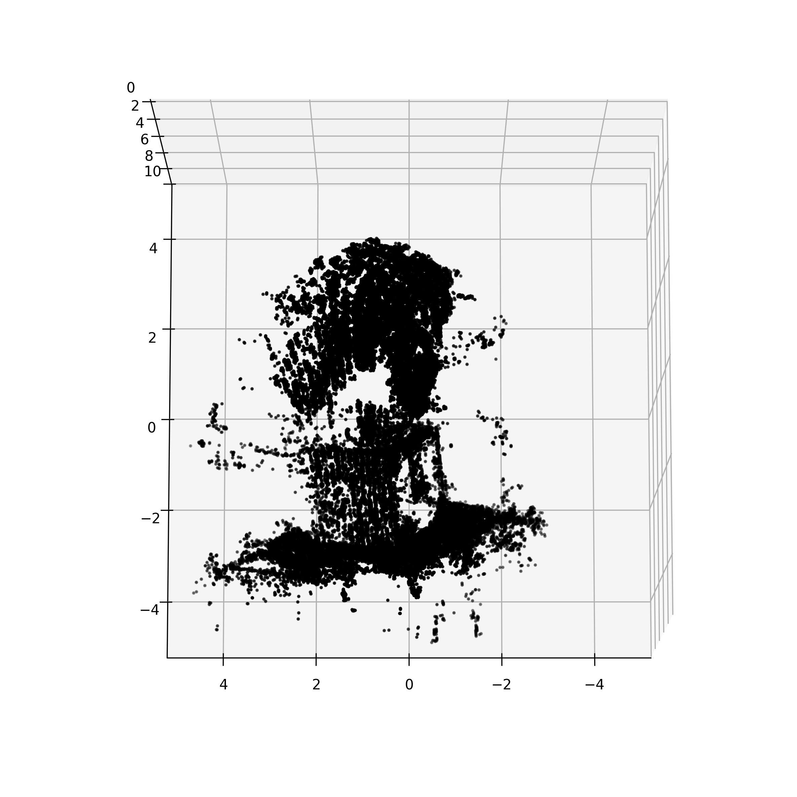

Return to Assignment 4 Overview
The implementations for P4 parts a, b, c, d and e can be found in the submitted p4.py file.

Looking at the final reconstruction, I can make out the general shape of the statue for example its head and base. However, there are still some missing areas and scattered points that do not seem to belong to the statue. I think reconstructing a larger scene, such as a house, would be more difficult for a few reasons. A house would have more surfaces and features that need to be matched between images, which increases the chances of incorrect correspondences. There would also be areas that are hidden from certain viewpoints, making it difficult to reconstruct the entire house using only two images. Plus, some surfaces like plain walls or windows, might not have enough distinct features to match accurately. To reconstruct a larger scene like a house, I would likely need more images taken from different angles to capture all of the surfaces and provide enough corresponding points for triangulation.